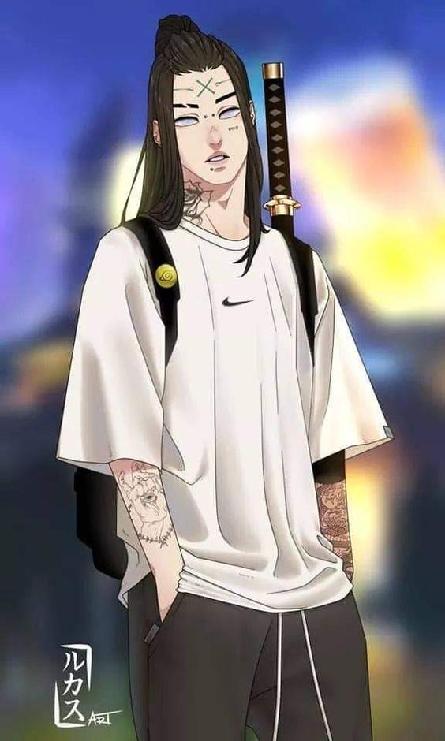
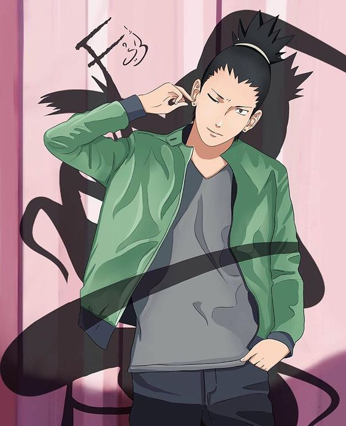
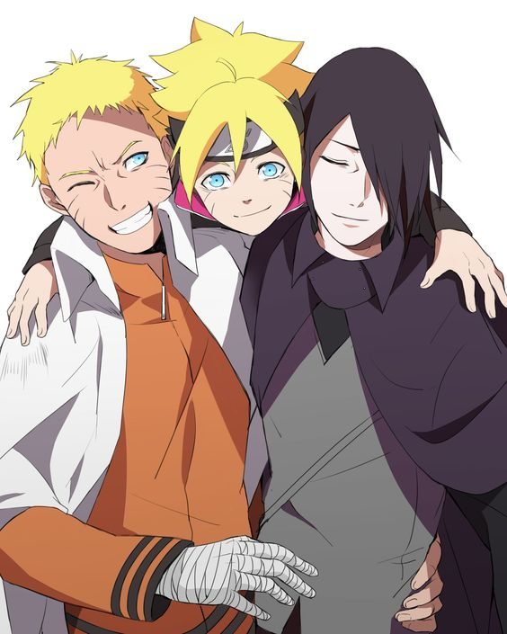

Hyūga Neji was a shinobi of Konohagakure's Hyūga clan. Though a prodigy even by the Hyūga's standards, Neji was a member of the clan's branch house; no matter how skilled he became, he would always be in service to the Hyūga's main house, a fact that convinced him fate was predetermined. After experiencing Naruto Uzumaki's refusal to be limited by such an ideology, Neji realised his fate was what he chose it to be, and as a member of Team Guy he sought the strength necessary to make the future he wanted for his family and friends, and ultimately sacrificed his life to protect the very same person who taught him about the freedom of one's choice of fate, Naruto.
Hatake Kakashi is a shinobi of Konohagakure's Hatake clan. Famed as Kakashi of the Sharingan (Sharingan no Kakashi), he is one of Konoha's most talented ninja; regularly looked to for advice and leadership despite his personal dislike of responsibility. To his students on Team 7, Kakashi teaches the importance of teamwork, a lesson he received, along with the Sharingan, from his childhood friend, Obito Uchiha. After the Fourth Shinobi World War, Kakashi becomes Konoha's Sixth Hokage (Rokudaime Hokage, Literally meaning: Sixth Fire Shadow).

Nara Shikamaru is a shinobi of Konohagakure's Nara clan. Though lazy by nature, Shikamaru has a rare intellect that consistently allows him to prevail in combat. The responsibilities that these successes leave him with cause him frequent annoyance, but he gladly accepts them so that he may be of service to his fellow members of Team Asuma, and to prove himself to generations of the past and future.
Shikamaru is naturally a lazy person and his inclination is to do as little work as possible. As an Academy student and even during his early career as a genin, Shikamaru is able to get away with this, spending his days sleeping, watching the clouds, or playing games of shōgi and Go. His goal is to live unremarkably, free of anything of noticeably good or bad, and then to die just as unremarkably as he lived. When he is faced with the potential for conflict or commitment, he responds first by saying, "how troublesome," and then by trying to find some way out of it, either by pretending to be indisposed or even outright saying that he doesn't want to do whatever it is.
Shikamaru undergoes a rapid maturity after the death of his teacher, Asuma Sarutobi, whose loss forces Shikamaru to recognise that the world is not safe that he cannot be kept protected from it forever. After avenging Asuma, Shikamaru takes it upon himself to do all that he can to make things better for future Konoha generations, especially Asuma's then-unborn daughter, Mirai; such is the Will of Fire. He may still balk at the prospect of the work he must do, but he no longer runs from it, even going so far as to argue in favour of difficult choices if it will guarantee his friends' and village's survival. In Shikamaru Hiden, he describes his new goal in life as, rather than living unremarkably himself and watching the clouds all the time, to instead make a world where his children or grandchildren can live that way if they choose to.
After Shikamaru was assigned to Team 10, Asuma noticed that Shikamaru was much sharper than his Academy scores indicated. By disguising a number of intelligence tests as games and puzzles – the only way Asuma could get Shikamaru to be interested – Asuma discovered that Shikamaru has an IQ of over 200; his poor grades were because he was too lazy to take any of the written exams. It is chiefly because of his intelligence that Shikamaru receives as many responsibilities as he does, with the Fifth Hokage routinely pushing Shikamaru to use his intellect for his allies' and village's benefit. Indeed, the Hokage's faith in him is well-founded, as Shikamaru remains acutely aware of his own and others' limitations, allowing him to avoid surprise and unnecessary risk. By the time of Boruto: Naruto the Movie, he is regarded as the smartest person in Konoha.

Uchiha Sasuke is one of the last surviving members of Konohagakure's Uchiha clan. After his older brother, Itachi, slaughtered their clan, Sasuke made it his mission in life to avenge them by killing Itachi. He is added to Team 7 upon becoming a ninja and, through competition with his rival and best friend, Naruto Uzumaki, Sasuke starts developing his skills. Dissatisfied with his progress, he defects from Konoha so that he can acquire the strength needed to exact his revenge. His years of seeking vengeance and his actions that followed become increasingly demanding, irrational and isolates him from others, leading him to be branded as an international criminal. After learning the truth of his brother's sacrifice, later proving instrumental in ending the Fourth Shinobi World War, and being happily redeemed by Naruto, Sasuke decides to return to Konoha and dedicate his life to help protect the village and its inhabitants, becoming referred to as the "Supporting Kage" (Sasaukage, Literally meaning: Supporting Shadow).
{kind=link}